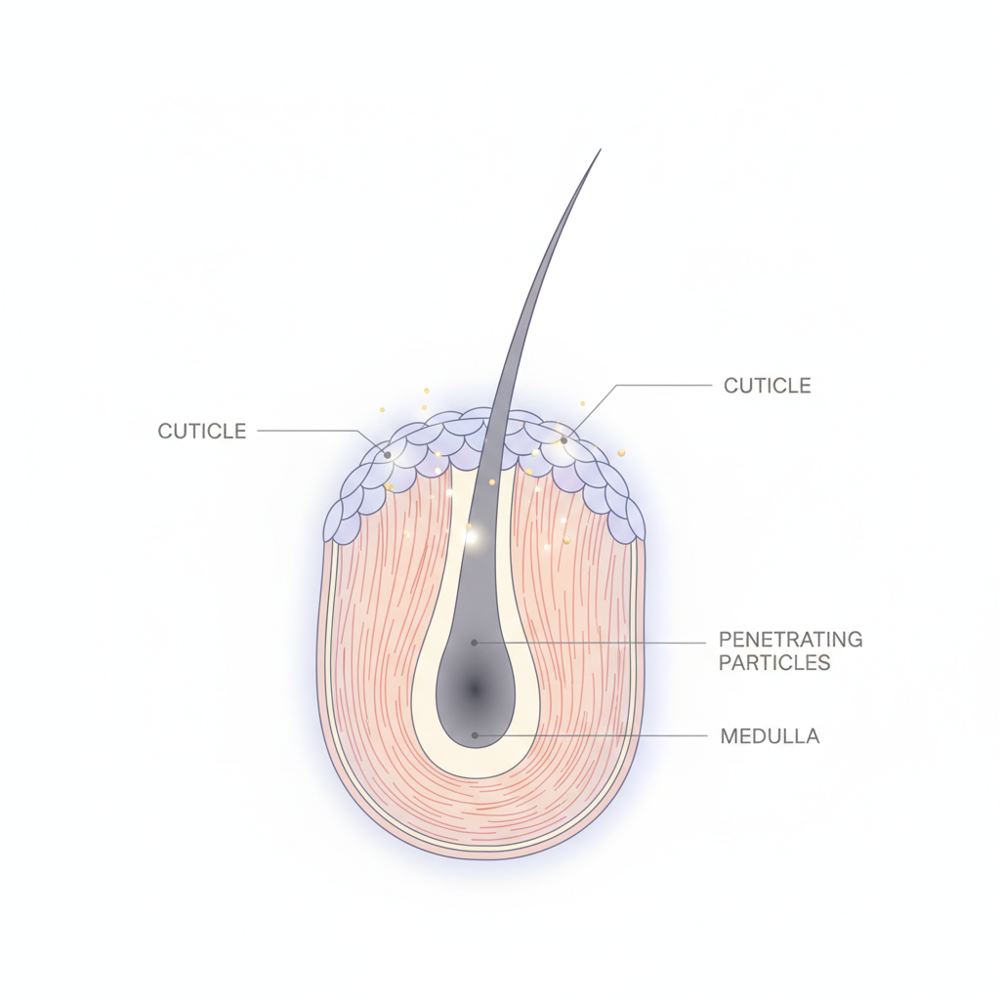
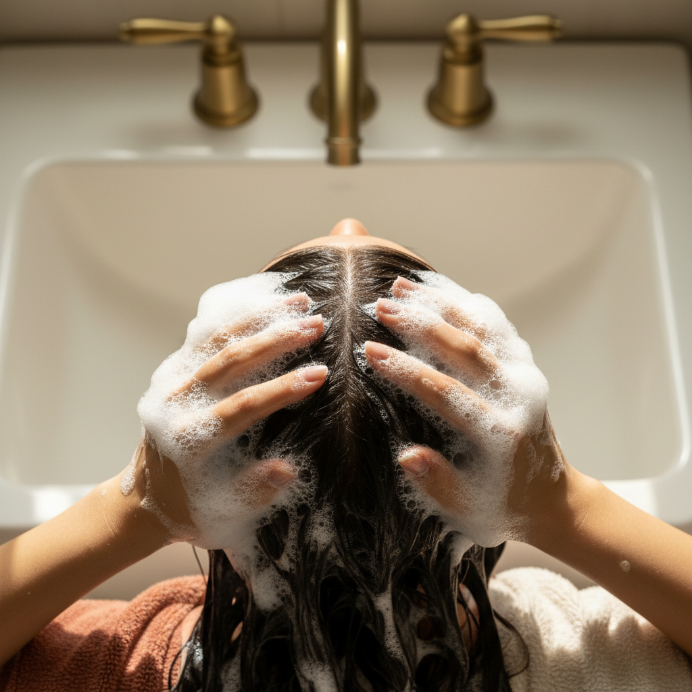
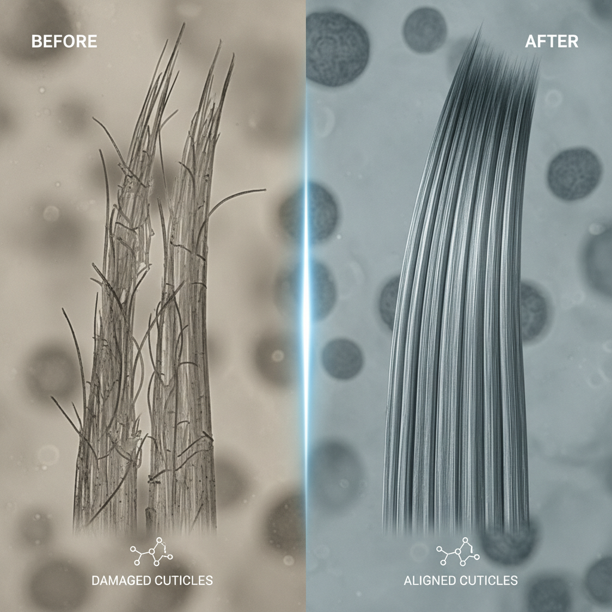
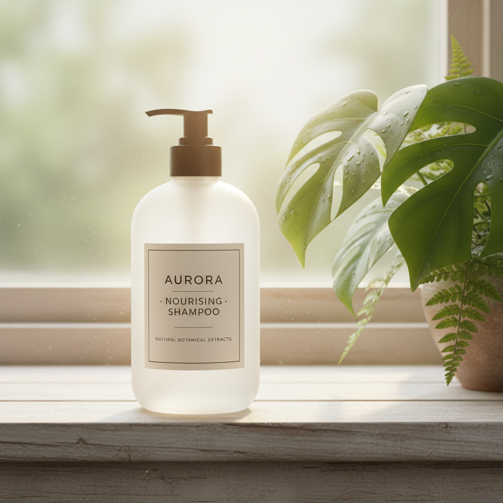

シャンプーの成分表をじっくり見たことがある人なら、ジラウロイルグルタミン酸リシンNaという長い名前に出くわしたことがあるかもしれません。読みにくいし、覚えられない。でもこの成分、美容師の間ではペリセアという通称でかなり知られています。
髪の補修成分はいくつもあるけれど、ペリセアには他の成分にはない特徴があります。浸透の速さと、洗い流しても残る持続力。この2つがどう髪に作用するのかを、できるだけ噛み砕いて説明してみます。
ペリセアとは何か。成分表ではどこにいるのか

ペリセアは旭化成ファインケムが開発した補修成分で、正式名称はジラウロイルグルタミン酸リシンNa。天然の脂肪酸とアミノ酸を原料にした両親媒性の化合物です。
両親媒性というのは、水になじむ部分と油になじむ部分の両方を持っているという意味です。髪の表面はキューティクルという油になじみやすい層で覆われていて、内部のコルテックスは水を含む構造になっている。ペリセアはどちらにもなじめるから、表面で弾かれずに内側まで入っていける。ここが出発点です。
成分表の読み方を知っている人なら、配合量の多い順に記載されるルールはご存じだと思います。ペリセアは補修成分なので、成分表の中盤から後半に記載されるのが一般的です。水や洗浄成分のように上位には来ませんが、少量でも機能するタイプの成分なので、表示順が後ろでも配合されていること自体に意味があります。
約1分で髪内部に届く浸透力の仕組み

ペリセアが他の補修成分と一線を画す理由は、浸透スピードにあります。旭化成の技術資料によれば、ペリセアは約1分で毛髪内部に到達します。
従来の補修成分として使われてきたPPTは、分子量が大きいためキューティクルの隙間から入りにくく、髪の表面にとどまりやすい傾向がありました。トリートメントを塗って数分から10分置いてください、という指示があるのはそのためです。浸透に時間がかかるから、置き時間で補っているわけです。
ペリセアの分子はジェミニ型と呼ばれる双子構造をしています。2本の脂肪酸鎖と3つの親水基を持つ独特な形が、キューティクルの隙間にすっと入り込みやすい。しかもダメージの有無を問わず浸透することが確認されています。健康な髪にも、傷んだ髪にも入る。
シャンプーの泡で髪を洗っている数十秒の間にもう届いている。これはシャンプーという洗い流す製品に補修成分を入れる意味を根本から変えた性質です。
洗い流しても髪の中に残る持続性

浸透が速いだけなら、洗い流したときに一緒に出ていってしまう可能性もあります。ペリセアが評価されているもうひとつの理由は、シャンプーで洗い流しても髪の内部にとどまり続けるという点です。
これは分子の構造に由来しています。ペリセアの双子型分子はコルテックス内部の脂質構造と親和性が高く、入り込んだ先でしっかり居場所を確保する。表面をコーティングして手触りを良くする成分とは根本的に違い、内側から髪の強度を支えます。
使い続けるほどに蓄積するというデータもあります。1回のシャンプーで劇的に変わるわけではなく、毎日使うことでコルテックスの内部補修が少しずつ進む。ハリやコシが戻ってきたと感じるのは、このじわじわとした積み重ねによるものです。
ペリセア配合シャンプーを選ぶときに見るべきこと

ペリセア配合と書いてあれば何でも同じかというと、そうではありません。確認しておきたい点が3つあります。
- ベースの洗浄成分が硫酸系かアミノ酸系か。ペリセアで内部を補修しても、洗浄力が強すぎるシャンプーでは差し引きゼロになりかねない
- ペリセア以外の補修成分や保湿成分も配合されているか。エルカラクトンのような熱補修成分やヒアルロン酸が一緒に入っていると、内部補修と外部保護の両方をカバーできる
- 成分表でペリセアの記載位置が極端に末尾でないか。あまりに後ろだと、配合量がごく微量の可能性がある
洗浄成分の見分け方がよくわからないという人は、成分表の読み方の記事で基本を押さえてから成分表を見ると判断しやすくなります。
ペリセアが向いている髪、そうでない髪
ペリセアは内部補修の成分なので、髪の内側がスカスカになっているダメージ毛ほど変化を感じやすい傾向があります。カラーやパーマを繰り返している人、縮毛矯正をかけている人、アイロンを毎日使う人。コルテックスのタンパク質が流出して中身が空洞化しているタイプの髪には、ペリセアの浸透力と持続力がよく合います。
一方で、髪の悩みが頭皮の油分バランスやフケ・かゆみにある場合は、ペリセアよりも洗浄成分や頭皮ケア成分のほうが優先順位は高い。補修成分はあくまで髪の毛に作用するものであり、頭皮の問題には別のアプローチが必要です。
自分の悩みが髪のダメージなのか頭皮のトラブルなのか。そこを切り分けるだけで、シャンプー選びの精度はかなり上がります。ペリセアが入っているかどうかを見るのは、髪のダメージに悩んでいる人にとっての判断材料のひとつです。成分表を読める目を持っておくと、広告に頼らず自分で選べるようになります。